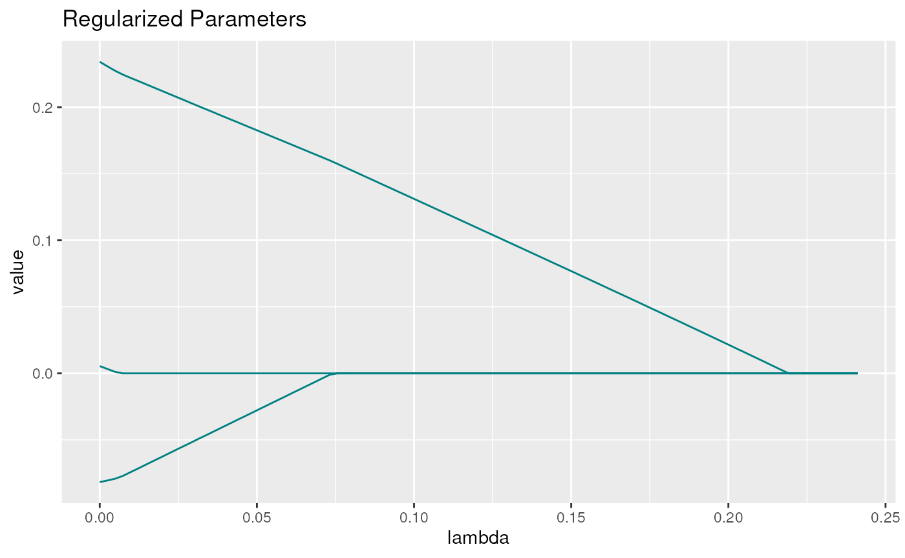
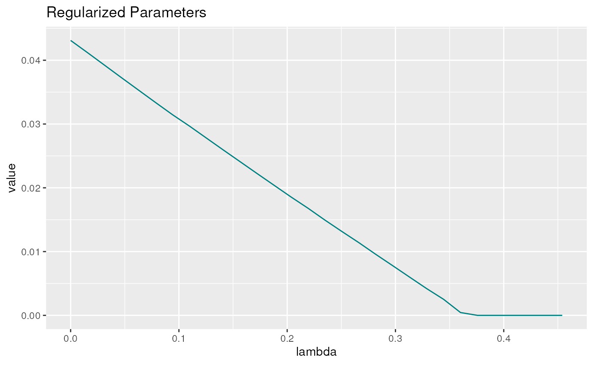

Parameter-transformations
Parameter-transformations.Rmd
library(lessSEM)
#> Loading required package: lavaan
#> This is lavaan 0.6-14
#> lavaan is FREE software! Please report any bugs.To allow for more flexible model estimation, lessSEM offers parameter transformations. This is an experimental feature, so be careful when using it. However, parameter transformations can be very powerful and simplify implementing some specific forms of regularization.
Motivation
In longitudinal SEM, it is important to investigate if parameters
stay the same over time (e.g., measurement invariance of loadings). This
can be difficult to decide and may require setting up many different
models manually. Here, regularization techniques can be very handy. For
instance, in the seminal political democracy example, the model is
typically set up as follows (see ?lavaan::sem):
modelSyntax <- '
# latent variable definitions
ind60 =~ x1 + x2 + x3
dem60 =~ y1 + a*y2 + b*y3 + c*y4
dem65 =~ y5 + a*y6 + b*y7 + c*y8
# regressions
dem60 ~ ind60
dem65 ~ ind60 + dem60
# residual correlations
y1 ~~ y5
y2 ~~ y4
y3 ~~ y7
y4 ~~ y8
y6 ~~ y8
'Note that the loadings a, b, and c are assumed to stay the same over time. That is, measurement invariance is assumed! Relaxing this assumption, we could define the model as follows:
modelSyntax <- '
# latent variable definitions
ind60 =~ x1 + x2 + x3
dem60 =~ y1 + a1*y2 + b1*y3 + c1*y4
dem65 =~ y5 + a2*y6 + b2*y7 + c2*y8
# regressions
dem60 ~ ind60
dem65 ~ ind60 + dem60
# residual correlations
y1 ~~ y5
y2 ~~ y4
y3 ~~ y7
y4 ~~ y8
y6 ~~ y8
'Here, each loading is estimated separately. This results in a more complex model. How do we know which model to use? There are many procedures to answer this question (e.g., using modification indexes, setting up separate models by hand, etc.). In the following, we will show how regularization could be used (see e.g., Belzak & Bauer, 2020; Jacobucci & Grimm, 2018).
Using Regularization
First, note that measurement invariance can be rephrased as \(a_1-a_2 = 0\), \(b_1-b_2 = 0\), and \(c_1-c_2 = 0\). Thus, regularizing the
differences between these parameters may allow for testing measurement
invariance (e.g., Belzak & Bauer, 2020; Liang et al., 2018; Muthen
& Asparouhov, 2013). In fact, this is used in Bayesian SEM to test
approximate measurement invariance (Liang et al., 2018; Muthen &
Asparouhov, 2013). Similar procedures have also been developed by Huang
(2018) for multi-group differences in parameter estimates and by Fisher
et al. (2022) in vector autoregressive models. Furthermore, Jacobucci
& Grimm (2018) proposed regularizing differences in latent change
score models to test equivalence of autoproportion parameters over time
using a two-step procedure. To this end, there they implemented the
diff_lasso in regsem (Jacobucci et al.,
2019). Such a diff_lasso is not available in
lessSEM. Instead, lessSEM provides a
flexible workaround: parameter transformations. To make this work, we
have to re-define our parameters.
Redefine:
\[ \begin{align} a_2 &= a_1 + \Delta a_2\\ b_2 &= b_1 + \Delta b_2\\ c_2 &= c_1 + \Delta c_2 \end{align} \] By regularizing \(\Delta a_2\), \(\Delta b_2\), and \(\Delta c_2\) towards zero, we can enforce measurement invariance over time.
Setting up the Model
We first start with the most flexible model which we want to test:
library(lavaan)
modelSyntax <- '
# latent variable definitions
ind60 =~ x1 + x2 + x3
dem60 =~ y1 + a1*y2 + b1*y3 + c1*y4
dem65 =~ y5 + a2*y6 + b2*y7 + c2*y8
# regressions
dem60 ~ ind60
dem65 ~ ind60 + dem60
# residual correlations
y1 ~~ y5
y2 ~~ y4
y3 ~~ y7
y4 ~~ y8
y6 ~~ y8
'
lavaanFit <- sem(model = modelSyntax,
data = PoliticalDemocracy)Note that the model defined above estimates all parameters time-point specific. That is, no measurement invariance is assumed.
Now, we want to redefine the parameters as outlined above:
\[ \begin{align} a_2 &= a_1 + \Delta a_2\\ b_2 &= b_1 + \Delta b_2\\ c_2 &= c_1 + \Delta c_2 \end{align} \]
In lessSEM such redefinitions are called
transformations and can be passed to the penalty functions (e.g., to
lasso) using the modifyModel command.
First, we have to create a definition of our transformations:
transformations <- "
// IMPORTANT: Our transformations always have to start with the follwing line:
parameters: a1, a2, b1, b2, c1, c2, delta_a2, delta_b2, delta_c2
// In the line above, we defined the names of the parameters which we
// want to use in our transformations. EACH AND EVERY PARAMETER USED IN
// THE FOLLOWING MUST BE STATED ABOVE. The line must always start with
// the keyword 'parameters' followed by a colon. The parameters must be
// separated by commata.
// Comments can be added by using double backslash as shown here.
// Now we can state our transformations:
a2 = a1 + delta_a2; // Note: Each declaration must end with a semi-colon!
b2 = b1 + delta_b2;
c2 = c1 + delta_c2;
"Next, we have to pass the transformations variable to
the penalty function:
lassoFit <- lasso(lavaanModel = lavaanFit,
regularized = c("delta_a2", "delta_b2", "delta_c2"),# we want to regularize
# the differences between the parameters
nLambdas = 100,
# Our model modification must make use of the modifyModel - function:
modifyModel = modifyModel(transformations = transformations)
)Let’s have a look at the parameter estimates:
coef(lassoFit)@estimates[seq(1,100,10),c("a1", "b1", "c1", "delta_a2", "delta_b2", "delta_c2")]
#> a1 b1 c1 delta_a2 delta_b2 delta_c2
#> [1,] 1.210973 1.167917 1.233987 0.00000000 0.000000000 0
#> [2,] 1.211087 1.166369 1.234012 0.00000000 0.002697893 0
#> [3,] 1.212569 1.150755 1.234643 0.00000000 0.030061810 0
#> [4,] 1.214346 1.135706 1.235561 0.00000000 0.057011496 0
#> [5,] 1.216417 1.121165 1.236776 0.00000000 0.083706587 0
#> [6,] 1.218770 1.107057 1.238262 0.00000000 0.110189007 0
#> [7,] 1.221411 1.093357 1.240041 0.00000000 0.136518096 0
#> [8,] 1.226621 1.080073 1.242027 -0.00396875 0.162494972 0
#> [9,] 1.246399 1.067703 1.244333 -0.03213194 0.186303618 0
#> [10,] 1.266518 1.055795 1.247167 -0.06025881 0.210169907 0Note that the differences between the parameters get smaller with larger \(\lambda\) values. We can also plot the differences:
plot(lassoFit)
To check if measurement invariance can be assumed, we can select the best model using information criteria:
coef(lassoFit, criterion = "BIC")
#>
#> Tuning ||--|| Estimates
#> ------- ------- ||--|| ---------- ---------- ---------- ---------- ----------
#> lambda alpha ||--|| ind60=~x2 ind60=~x3 a1 b1 c1
#> ======= ======= ||--|| ========== ========== ========== ========== ==========
#> 0.2216 1.0000 ||--|| 2.1825 1.8189 1.2110 1.1679 1.2340
#>
#>
#> ----------- ----------- ----------- ---------- ---------- ----------
#> dem60~ind60 dem65~ind60 dem65~dem60 y1~~y5 y2~~y4 y3~~y7
#> =========== =========== =========== ========== ========== ==========
#> 1.4534 0.5935 0.8659 0.5552 1.5948 0.7806
#>
#>
#> ---------- ---------- ---------- ---------- ---------- ---------- ----------
#> y4~~y8 y6~~y8 x1~~x1 x2~~x2 x3~~x3 y1~~y1 y2~~y2
#> ========== ========== ========== ========== ========== ========== ==========
#> 0.6537 1.5350 0.0820 0.1177 0.4675 1.7929 7.3843
#>
#>
#> ---------- ---------- ---------- ---------- ---------- ---------- ------------
#> y3~~y3 y4~~y4 y5~~y5 y6~~y6 y7~~y7 y8~~y8 ind60~~ind60
#> ========== ========== ========== ========== ========== ========== ============
#> 5.0175 3.4074 2.2857 4.8978 3.5510 3.4512 0.4480
#>
#>
#> ------------ ------------ ---------- ---------- ----------
#> dem60~~dem60 dem65~~dem65 delta_a2 delta_b2 delta_c2
#> ============ ============ ========== ========== ==========
#> 3.9408 0.2034 . . .Note that all differences have been zeroed – that is, a model with full measurement invariance did fit best.
We can also access the transformed parameters:
head(lassoFit@transformations)
#> lambda alpha a2 b2 c2
#> 1 0.2411201 1 1.210973 1.167917 1.233987
#> 2 0.2386846 1 1.210976 1.167915 1.233991
#> 3 0.2362490 1 1.210981 1.167924 1.233993
#> 4 0.2338134 1 1.210980 1.167928 1.233995
#> 5 0.2313779 1 1.210980 1.167929 1.233994
#> 6 0.2289423 1 1.210979 1.167928 1.233993Limitation: Above, we did not take into account that the variables may have different scales; a thorough use of the method should scale the data first.
Some Guidelines
When using transformations, please make sure to give your parameters
names which are compatible with standard naming conventions in R. The
default names of lavaan (e.g., f=~y1 for loadings) are not
supported. That is, all parameters used in the transformations should be
given names in the lavaan syntax.
In the example above, we used the following syntax:
modelSyntax <- '
# latent variable definitions
ind60 =~ x1 + x2 + x3
dem60 =~ y1 + a1*y2 + b1*y3 + c1*y4
dem65 =~ y5 + a2*y6 + b2*y7 + c2*y8
# regressions
dem60 ~ ind60
dem65 ~ ind60 + dem60
# residual correlations
y1 ~~ y5
y2 ~~ y4
y3 ~~ y7
y4 ~~ y8
y6 ~~ y8
'Importantly, all parameters used in the transformation
(a1, b1, c1, a2, b2, c2) were labeled in the lavaan syntax.
As a counter example:
modelSyntax <- '
# latent variable definitions
ind60 =~ x1 + x2 + x3
dem60 =~ y1 + y2 + y3 + y4
dem65 =~ y5 + y6 + y7 + y8
# regressions
dem60 ~ ind60
dem65 ~ ind60 + dem60
# residual correlations
y1 ~~ y5
y2 ~~ y4
y3 ~~ y7
y4 ~~ y8
y6 ~~ y8
'The syntax above specifies the same model, but will use the
lavaan-specific naming convention for the parameters. a1,
for example, will be named dem60=~y2. These names are not
compatible with the current implementation of transformations used in
lessSEM.
Further Examples
Another example where the transformations could be useful is when detecting non-stationarity in autoregressive and cross-lagged parameters (e.g., Liang et al., 2018). In the following, we will demonstrate this with an autoregressive model. The model is defined as:
\[ \begin{align} \eta_t &= a_t\eta_{t-1} + \zeta_t\\ \begin{bmatrix} y_{1,t}\\ y_{2,t}\\ y_{3,t}\\ \end{bmatrix} &= \begin{bmatrix} l_1\\ l_2\\ l_3\\ \end{bmatrix} \eta_t + \pmb\varepsilon \end{align} \]
It is often assumed that the autoregressive effect \(a_t\) is constant over time; that is, the same autoregressive effect is used for all time points. This is a strong assumption and we may want to test it. One way to do so is by using the same procedure outlined above, where we define \(a_t = a_1 + \Delta a_t\) (see Jacobucci & Grimm, 2018 for a similar procedure in latent change score models). In this case, each autoregressive effect is composed of the first autoregressive effect (\(a_1\)) and the difference between the parameters (\(\Delta a_t\)). By regularizing \(\Delta a_t\), we can enforce stationarity.
A drawback of the approach outlined above is that the first autoregressive effect is treated differently from the rest: After all, why should \(a_1\) serve as baseline and not \(a_2\) or \(a_5\)? We will take a slightly different approach, again building on the idea of Fisher et al. (2022). A similar approach has also been proposed by Bai et al. (2020). Let’s define the autoregressive effect as
\[a_t = a_{t-1} + \Delta a_t\]
Note that \(\Delta a_t\) is no longer the difference with respect to the initial autoregressive effect \(a_1\) but the difference with respect to the directly preceding time point. When regularizing \(\Delta a_t\), we can now detect sudden changes in the parameter – e.g., due to an intervention. This can also be thought of as a regime switching model, where the underlying model changes over time (see also Ou et al., 2019 for regime switching models). With our regularization procedure, we want to detect if and when the process changes.
We won’t go into the details of how to set up the model here, but you can find them in the source of this file (e.g., in GitHub). We simulated a data set with 200 individuals measured at 10 time points. The autoregressive effect \(a_t\) changes at \(t=4\) from \(.6\) to \(.2\).
The data looks as follows:
head(data)
#> y1_t1 y2_t1 y3_t1 y1_t2 y2_t2 y3_t2
#> [1,] 0.2627294 -0.07745288 -0.06014729 1.1052896 -0.5125258 0.1352253
#> [2,] -0.5795123 0.27989039 -1.76295329 -1.1646535 0.0607009 -0.7770722
#> [3,] 0.5746526 0.67203557 1.30772224 0.5620735 1.3873269 1.2415508
#> [4,] 1.6376973 1.30880439 1.35159277 0.4681794 1.5370870 0.6961462
#> [5,] 0.4995286 -0.23722728 0.61244148 0.3469646 0.3052115 0.2639443
#> [6,] -0.9766373 0.94700260 -0.59421930 -0.3197840 0.8221090 -0.6808501
#> y1_t3 y2_t3 y3_t3 y1_t4 y2_t4 y3_t4
#> [1,] 0.6775861 0.48382200 0.5163607 0.06936298 1.6842420 0.5604284
#> [2,] -0.4571539 -0.30575453 0.7552239 0.06618071 -1.5803092 0.1672394
#> [3,] 0.8255529 -0.09010965 1.5877450 0.75756487 1.3579232 -0.1379793
#> [4,] 0.1872212 -1.57377418 1.1081811 -0.50832183 1.1968847 -1.6473363
#> [5,] 1.3768225 0.02394048 1.1573912 1.30350064 0.3049751 -0.0146624
#> [6,] -0.3434095 -0.90348981 -1.1760506 -1.72146444 -1.2828716 -0.4379788
#> y1_t5 y2_t5 y3_t5 y1_t6 y2_t6 y3_t6
#> [1,] -1.6171372 -1.5100658 -2.1212448 -0.9014921 -0.9732405 -0.89209997
#> [2,] 0.1045129 0.3483139 -0.3669688 -0.6347357 -1.1095700 0.01821975
#> [3,] -1.1968405 -0.3623344 -0.8732056 -0.8290071 -0.3555817 -0.98268524
#> [4,] 0.4423361 -1.0372594 -0.8153181 -1.6003121 -2.1169045 -0.46541710
#> [5,] 1.3351806 0.1229075 0.8274846 0.4508487 0.1328104 0.65883759
#> [6,] 1.0261730 0.1686185 0.6083559 -0.7427341 0.4514472 -1.15435404
#> y1_t7 y2_t7 y3_t7 y1_t8 y2_t8 y3_t8
#> [1,] -1.4697023 -0.9088437 -2.1031570 0.9915954 0.26021125 1.2988304
#> [2,] 0.3845160 1.0140172 1.8585956 -1.1280623 0.62646559 -0.8323908
#> [3,] -1.8270782 -0.2335533 -1.6441484 -0.2693417 0.09757043 0.5752644
#> [4,] 1.3226249 1.7154104 1.8113749 0.3459617 0.29614603 0.2463911
#> [5,] -0.3915346 -0.5549143 -0.2476716 -1.3659303 1.14721685 -0.1968243
#> [6,] 1.7453347 1.2488910 0.6649188 -0.6131110 -0.27533871 0.1895920
#> y1_t9 y2_t9 y3_t9 y1_t10 y2_t10 y3_t10
#> [1,] 1.27416201 1.2010039 1.1426722 0.04668192 -0.24123204 -0.4421784
#> [2,] -0.41574193 -0.6890046 -1.4714503 -0.01788118 0.02058262 0.3191417
#> [3,] 0.37098052 -0.3486185 -0.4273464 -0.87844796 -1.36443913 -1.0240934
#> [4,] 0.55566216 1.2444869 0.1788493 0.81351163 -0.39685221 3.3330365
#> [5,] -1.58477183 -1.8546910 0.7432728 0.89776939 1.05624257 0.3635211
#> [6,] 0.02486185 -0.5151950 -0.2018260 1.13097234 0.74034559 2.5292256The lavaan model is defined as follows:
#> eta2 ~ a1*eta1
#> eta3 ~ a2*eta2
#> eta4 ~ a3*eta3
#> eta5 ~ a4*eta4
#> eta6 ~ a5*eta5
#> eta7 ~ a6*eta6
#> eta8 ~ a7*eta7
#> eta9 ~ a8*eta8
#> eta10 ~ a9*eta9
#>
#>
#> eta1 ~~ eta1
#> eta2 ~~ v*eta2
#> eta3 ~~ v*eta3
#> eta4 ~~ v*eta4
#> eta5 ~~ v*eta5
#> eta6 ~~ v*eta6
#> eta7 ~~ v*eta7
#> eta8 ~~ v*eta8
#> eta9 ~~ v*eta9
#> eta10 ~~ v*eta10
#>
#> eta1 =~ 1*y1_t1 + l2*y2_t1 + l3*y3_t1
#> y1_t1 ~~ mvar1*y1_t1
#> y2_t1 ~~ mvar2*y2_t1
#> y3_t1 ~~ mvar3*y3_t1
#> eta2 =~ 1*y1_t2 + l2*y2_t2 + l3*y3_t2
#> y1_t2 ~~ mvar1*y1_t2
#> y2_t2 ~~ mvar2*y2_t2
#> y3_t2 ~~ mvar3*y3_t2
#> eta3 =~ 1*y1_t3 + l2*y2_t3 + l3*y3_t3
#> y1_t3 ~~ mvar1*y1_t3
#> y2_t3 ~~ mvar2*y2_t3
#> y3_t3 ~~ mvar3*y3_t3
#> eta4 =~ 1*y1_t4 + l2*y2_t4 + l3*y3_t4
#> y1_t4 ~~ mvar1*y1_t4
#> y2_t4 ~~ mvar2*y2_t4
#> y3_t4 ~~ mvar3*y3_t4
#> eta5 =~ 1*y1_t5 + l2*y2_t5 + l3*y3_t5
#> y1_t5 ~~ mvar1*y1_t5
#> y2_t5 ~~ mvar2*y2_t5
#> y3_t5 ~~ mvar3*y3_t5
#> eta6 =~ 1*y1_t6 + l2*y2_t6 + l3*y3_t6
#> y1_t6 ~~ mvar1*y1_t6
#> y2_t6 ~~ mvar2*y2_t6
#> y3_t6 ~~ mvar3*y3_t6
#> eta7 =~ 1*y1_t7 + l2*y2_t7 + l3*y3_t7
#> y1_t7 ~~ mvar1*y1_t7
#> y2_t7 ~~ mvar2*y2_t7
#> y3_t7 ~~ mvar3*y3_t7
#> eta8 =~ 1*y1_t8 + l2*y2_t8 + l3*y3_t8
#> y1_t8 ~~ mvar1*y1_t8
#> y2_t8 ~~ mvar2*y2_t8
#> y3_t8 ~~ mvar3*y3_t8
#> eta9 =~ 1*y1_t9 + l2*y2_t9 + l3*y3_t9
#> y1_t9 ~~ mvar1*y1_t9
#> y2_t9 ~~ mvar2*y2_t9
#> y3_t9 ~~ mvar3*y3_t9
#> eta10 =~ 1*y1_t10 + l2*y2_t10 + l3*y3_t10
#> y1_t10 ~~ mvar1*y1_t10
#> y2_t10 ~~ mvar2*y2_t10
#> y3_t10 ~~ mvar3*y3_t10We fit the model using lavaan:
lavaanFit <- sem(model = lavaanSyntax,
data = data,
orthogonal.y = TRUE,
orthogonal.x = TRUE,
missing = "ml")
coef(lavaanFit)
#> a1 a2 a3 a4 a5 a6 a7
#> 0.484 0.535 0.531 0.135 0.124 0.040 0.173
#> a8 a9 eta1~~eta1 v v v v
#> 0.296 0.185 1.108 0.804 0.804 0.804 0.804
#> v v v v v l2 l3
#> 0.804 0.804 0.804 0.804 0.804 0.567 0.672
#> mvar1 mvar2 mvar3 l2 l3 mvar1 mvar2
#> 0.049 0.744 0.652 0.567 0.672 0.049 0.744
#> mvar3 l2 l3 mvar1 mvar2 mvar3 l2
#> 0.652 0.567 0.672 0.049 0.744 0.652 0.567
#> l3 mvar1 mvar2 mvar3 l2 l3 mvar1
#> 0.672 0.049 0.744 0.652 0.567 0.672 0.049
#> mvar2 mvar3 l2 l3 mvar1 mvar2 mvar3
#> 0.744 0.652 0.567 0.672 0.049 0.744 0.652
#> l2 l3 mvar1 mvar2 mvar3 l2 l3
#> 0.567 0.672 0.049 0.744 0.652 0.567 0.672
#> mvar1 mvar2 mvar3 l2 l3 mvar1 mvar2
#> 0.049 0.744 0.652 0.567 0.672 0.049 0.744
#> mvar3 l2 l3 mvar1 mvar2 mvar3 y1_t1~1
#> 0.652 0.567 0.672 0.049 0.744 0.652 -0.155
#> y2_t1~1 y3_t1~1 y1_t2~1 y2_t2~1 y3_t2~1 y1_t3~1 y2_t3~1
#> -0.088 -0.175 -0.157 -0.049 -0.085 -0.150 -0.030
#> y3_t3~1 y1_t4~1 y2_t4~1 y3_t4~1 y1_t5~1 y2_t5~1 y3_t5~1
#> -0.157 -0.095 -0.022 -0.080 0.037 -0.023 0.058
#> y1_t6~1 y2_t6~1 y3_t6~1 y1_t7~1 y2_t7~1 y3_t7~1 y1_t8~1
#> 0.050 0.065 -0.002 -0.047 0.068 -0.038 -0.022
#> y2_t8~1 y3_t8~1 y1_t9~1 y2_t9~1 y3_t9~1 y1_t10~1 y2_t10~1
#> -0.028 -0.048 -0.077 -0.058 -0.041 0.013 -0.012
#> y3_t10~1
#> -0.004Note that no constraints on autoregressive effects are implemented – each effect (a1-a9) is estimated separately.
We now define transformations as follows:
#> parameters: a1, a2, a3, a4, a5, a6, a7, a8, a9, delta2, delta3, delta4, delta5, delta6, delta7, delta8, delta9
#>
#> a2 = a1 + delta2;
#> a3 = a2 + delta3;
#> a4 = a3 + delta4;
#> a5 = a4 + delta5;
#> a6 = a5 + delta6;
#> a7 = a6 + delta7;
#> a8 = a7 + delta8;
#> a9 = a8 + delta9;Finally, we can fit our model:
lassoFit <- lasso(lavaanModel = lavaanFit,
regularized = paste0("delta", 2:9),# we want to regularize
# the differences between the parameters
nLambdas = 100,
# glmnet is considerably faster here:
method = "glmnet",
control = controlGlmnet(),
# Our model modification must make use of the modifyModel - function:
modifyModel = modifyModel(transformations = transformations)
)Extracting the best fitting model:
coef(lassoFit, criterion = "BIC")
#>
#> Tuning ||--|| Estimates
#> ------- ------- ||--|| ---------- ---------- ---------- ---------- ----------
#> lambda alpha ||--|| a1 eta1~~eta1 v l2 l3
#> ======= ======= ||--|| ========== ========== ========== ========== ==========
#> 0.2790 1.0000 ||--|| 0.4665 1.1055 0.8051 0.5696 0.6754
#>
#>
#> ---------- ---------- ---------- ---------- ---------- ---------- ----------
#> mvar1 mvar2 mvar3 y1_t1~1 y2_t1~1 y3_t1~1 y1_t2~1
#> ========== ========== ========== ========== ========== ========== ==========
#> 0.0533 0.7428 0.6500 -0.1546 -0.0878 -0.1746 -0.1565
#>
#>
#> ---------- ---------- ---------- ---------- ---------- ---------- ----------
#> y2_t2~1 y3_t2~1 y1_t3~1 y2_t3~1 y3_t3~1 y1_t4~1 y2_t4~1
#> ========== ========== ========== ========== ========== ========== ==========
#> -0.0492 -0.0849 -0.1499 -0.0302 -0.1572 -0.0952 -0.0224
#>
#>
#> ---------- ---------- ---------- ---------- ---------- ---------- ----------
#> y3_t4~1 y1_t5~1 y2_t5~1 y3_t5~1 y1_t6~1 y2_t6~1 y3_t6~1
#> ========== ========== ========== ========== ========== ========== ==========
#> -0.0798 0.0374 -0.0231 0.0576 0.0502 0.0651 -0.0019
#>
#>
#> ---------- ---------- ---------- ---------- ---------- ---------- ----------
#> y1_t7~1 y2_t7~1 y3_t7~1 y1_t8~1 y2_t8~1 y3_t8~1 y1_t9~1
#> ========== ========== ========== ========== ========== ========== ==========
#> -0.0465 0.0678 -0.0383 -0.0220 -0.0279 -0.0476 -0.0775
#>
#>
#> ---------- ---------- ---------- ---------- ---------- ---------- ----------
#> y2_t9~1 y3_t9~1 y1_t10~1 y2_t10~1 y3_t10~1 delta2 delta3
#> ========== ========== ========== ========== ========== ========== ==========
#> -0.0579 -0.0407 0.0132 -0.0118 -0.0042 . .
#>
#>
#> ---------- ---------- ---------- ---------- ---------- ----------
#> delta4 delta5 delta6 delta7 delta8 delta9
#> ========== ========== ========== ========== ========== ==========
#> -0.2807 . . . . .The true autoregressive effects are given by
#> [1] 0.6 0.6 0.6 0.2 0.2 0.2 0.2 0.2 0.2while the estimates are
#> [1] 0.4665091 0.4665091 0.4665091 0.1858552 0.1858552 0.1858552 0.1858552
#> [8] 0.1858552 0.1858552The result is not perfect, but lessSEM correctly identified a change in the autoregressive parameter.
Looking under the hood
The transformations used above are implemented using RcppArmadillo. This allows for a lot more complicated transformations than those outlined before. In general, lessSEM will take your transformations and try to translate them to C++. Let’s assume that the model is given by our first example:
modelSyntax <- '
# latent variable definitions
ind60 =~ x1 + x2 + x3
dem60 =~ y1 + a1*y2 + b1*y3 + c1*y4
dem65 =~ y5 + a2*y6 + b2*y7 + c2*y8
# regressions
dem60 ~ ind60
dem65 ~ ind60 + dem60
# residual correlations
y1 ~~ y5
y2 ~~ y4
y3 ~~ y7
y4 ~~ y8
y6 ~~ y8
'
lavaanFit <- sem(model = modelSyntax,
data = PoliticalDemocracy)We defined the transformations to be:
transformations <- "
parameters: a1, a2, b1, b2, c1, c2, delta_a2, delta_b2, delta_c2
a2 = a1 + delta_a2;
b2 = b1 + delta_b2;
c2 = c1 + delta_c2;
"When this transformation is passed to lessSEM, lessSEM will first try to figure out which parameters are already in the model and which ones are new. In our case a1, a2, b1, b2, c1, and c2 are already known, while delta_a2, delta_b2, and delta_c2 are new. lessSEM will now add the new parameters to the internal parameter vector. Next, lessSEM will scan the names of the parameters which appear on the left hand side of an equation (a2, b2, and c2) in our case. This will tell lessSEM which of your parameters are functions of other parameters (i.e., transformations). Knowing that a2 is a function of other parameters will tell lessSEM, that a2 should no longer be estimated. Instead, the parameters which make up a2 are estimated: a1 and delta_a2.
To see this in action, we can create the C++ function without compilation:
transformationFunction <- lessSEM:::.compileTransformations(syntax = transformations,
parameterLabels = names(getLavaanParameters(lavaanFit)),
compile = FALSE)First, let’s have a look at the extended parameter vector:
transformationFunction$parameters
#> [1] "a1" "a2" "b1" "b2" "c1" "c2" "delta_a2"
#> [8] "delta_b2" "delta_c2"Note that delta_a2, delta_b2, and delta_c2 have been added. Some of these are transformations of other parameters:
transformationFunction$isTransformation
#> [1] "a2" "b2" "c2"These will not be estimated but computed based on the other model parameters.
Finally, the C++ function has been returned:
cat(transformationFunction$armaFunction)
#>
#> // [[Rcpp::depends(RcppArmadillo)]]
#> #include <RcppArmadillo.h>
#> // [[Rcpp::export]]
#> Rcpp::NumericVector transformationFunction(Rcpp::NumericVector& parameterValues, Rcpp::List transformationList)
#> {
#> using namespace Rcpp;
#> using namespace arma;
#>
#> // extract required parameters from parameterValues
#>
#> double a1 = parameterValues["a1"];
#> double a2 = parameterValues["a2"];
#> double b1 = parameterValues["b1"];
#> double b2 = parameterValues["b2"];
#> double c1 = parameterValues["c1"];
#> double c2 = parameterValues["c2"];
#> double delta_a2 = parameterValues["delta_a2"];
#> double delta_b2 = parameterValues["delta_b2"];
#> double delta_c2 = parameterValues["delta_c2"];
#>
#>
#> // add user defined functions
#>
#>
#> a2 = a1 + delta_a2;
#> b2 = b1 + delta_b2;
#> c2 = c1 + delta_c2;
#>
#>
#>
#> // update parameters
#> parameterValues["a1"] = a1;
#> parameterValues["a2"] = a2;
#> parameterValues["b1"] = b1;
#> parameterValues["b2"] = b2;
#> parameterValues["c1"] = c1;
#> parameterValues["c2"] = c2;
#> parameterValues["delta_a2"] = delta_a2;
#> parameterValues["delta_b2"] = delta_b2;
#> parameterValues["delta_c2"] = delta_c2;
#>
#>
#> return(parameterValues);
#> }
#>
#>
#>
#> // https://gallery.rcpp.org/articles/passing-cpp-function-pointers/
#> typedef Rcpp::NumericVector (*transformationFunctionPtr)(Rcpp::NumericVector&, //parameters
#> Rcpp::List // transformationList
#> );
#>
#> typedef Rcpp::XPtr<transformationFunctionPtr> transformationFunctionPtr_t;
#>
#> // [[Rcpp::export]]
#> transformationFunctionPtr_t getPtr() {
#> return(transformationFunctionPtr_t(new transformationFunctionPtr(&transformationFunction)));
#> }Most importantly, note that the first step here is to extract the
required parameters from the parameter vector (e.g.,
double a1 = parameterValues["a1"];). Next, all of these
parameters are directly available for use in your transformations. This
is why we can simply write a2 = a1 + delta_a2;.
lessSEM also added the semicolons required by C++.
Finally, the transformed parameters are returned. To pass our function
to lessSEM, we also create a pointer to our function,
but this is beyond the scope here.
At this point you may be wondering where all the more complicated
transformations are that we promised above. Importantly, you can use any
of the functions implemented in Rcpp or
RcppArmadillo which can be applied to variables of type
double within your transformations without any in-depth
knowledge of C++. For instance, RcppArmadillo comes
with an exponential-function (exp), a pow and
a log function. Making use of this, we can implement a
univariate continuous time SEM (e.g., Voelkle & Oud, 2012). Far
superior versions of this model are implemented in ctsem and dynr) and Arnold et al. (in
submission) recently derived close form solutions for the gradients of
these models which should outperform lessSEM
considerably in terms of runtime.
We will use the same model from above, but remove the change in the autoregressive effect. The code to simulate the data set can be found in the source of this file (e.g., on GitHub).
The initial model is the same as before, however the autoregressive effect is constrained to equality over time and so are the manifest means. We also added an initial mean for latent variable \(\eta\) and changed the names of some variables to make using ctsem with this data easier:
cat(lavaanSyntax)
#> eta1 ~ a*eta0
#> eta2 ~ a*eta1
#> eta3 ~ a*eta2
#> eta4 ~ a*eta3
#> eta5 ~ a*eta4
#> eta6 ~ a*eta5
#> eta7 ~ a*eta6
#> eta8 ~ a*eta7
#> eta9 ~ a*eta8
#>
#>
#> eta0 ~~ eta0
#> eta1 ~~ v*eta1
#> eta2 ~~ v*eta2
#> eta3 ~~ v*eta3
#> eta4 ~~ v*eta4
#> eta5 ~~ v*eta5
#> eta6 ~~ v*eta6
#> eta7 ~~ v*eta7
#> eta8 ~~ v*eta8
#> eta9 ~~ v*eta9
#>
#>
#> eta0~1
#>
#> eta0 =~ 1*y1_T0 + l2*y2_T0 + l3*y3_T0
#> y1_T0 ~~ mvar1*y1_T0
#> y2_T0 ~~ mvar2*y2_T0
#> y3_T0 ~~ mvar3*y3_T0
#> y1_T0 ~ mMean1*1
#> y2_T0 ~ mMean2*1
#> y3_T0 ~ mMean3*1
#> eta1 =~ 1*y1_T1 + l2*y2_T1 + l3*y3_T1
#> y1_T1 ~~ mvar1*y1_T1
#> y2_T1 ~~ mvar2*y2_T1
#> y3_T1 ~~ mvar3*y3_T1
#> y1_T1 ~ mMean1*1
#> y2_T1 ~ mMean2*1
#> y3_T1 ~ mMean3*1
#> eta2 =~ 1*y1_T2 + l2*y2_T2 + l3*y3_T2
#> y1_T2 ~~ mvar1*y1_T2
#> y2_T2 ~~ mvar2*y2_T2
#> y3_T2 ~~ mvar3*y3_T2
#> y1_T2 ~ mMean1*1
#> y2_T2 ~ mMean2*1
#> y3_T2 ~ mMean3*1
#> eta3 =~ 1*y1_T3 + l2*y2_T3 + l3*y3_T3
#> y1_T3 ~~ mvar1*y1_T3
#> y2_T3 ~~ mvar2*y2_T3
#> y3_T3 ~~ mvar3*y3_T3
#> y1_T3 ~ mMean1*1
#> y2_T3 ~ mMean2*1
#> y3_T3 ~ mMean3*1
#> eta4 =~ 1*y1_T4 + l2*y2_T4 + l3*y3_T4
#> y1_T4 ~~ mvar1*y1_T4
#> y2_T4 ~~ mvar2*y2_T4
#> y3_T4 ~~ mvar3*y3_T4
#> y1_T4 ~ mMean1*1
#> y2_T4 ~ mMean2*1
#> y3_T4 ~ mMean3*1
#> eta5 =~ 1*y1_T5 + l2*y2_T5 + l3*y3_T5
#> y1_T5 ~~ mvar1*y1_T5
#> y2_T5 ~~ mvar2*y2_T5
#> y3_T5 ~~ mvar3*y3_T5
#> y1_T5 ~ mMean1*1
#> y2_T5 ~ mMean2*1
#> y3_T5 ~ mMean3*1
#> eta6 =~ 1*y1_T6 + l2*y2_T6 + l3*y3_T6
#> y1_T6 ~~ mvar1*y1_T6
#> y2_T6 ~~ mvar2*y2_T6
#> y3_T6 ~~ mvar3*y3_T6
#> y1_T6 ~ mMean1*1
#> y2_T6 ~ mMean2*1
#> y3_T6 ~ mMean3*1
#> eta7 =~ 1*y1_T7 + l2*y2_T7 + l3*y3_T7
#> y1_T7 ~~ mvar1*y1_T7
#> y2_T7 ~~ mvar2*y2_T7
#> y3_T7 ~~ mvar3*y3_T7
#> y1_T7 ~ mMean1*1
#> y2_T7 ~ mMean2*1
#> y3_T7 ~ mMean3*1
#> eta8 =~ 1*y1_T8 + l2*y2_T8 + l3*y3_T8
#> y1_T8 ~~ mvar1*y1_T8
#> y2_T8 ~~ mvar2*y2_T8
#> y3_T8 ~~ mvar3*y3_T8
#> y1_T8 ~ mMean1*1
#> y2_T8 ~ mMean2*1
#> y3_T8 ~ mMean3*1
#> eta9 =~ 1*y1_T9 + l2*y2_T9 + l3*y3_T9
#> y1_T9 ~~ mvar1*y1_T9
#> y2_T9 ~~ mvar2*y2_T9
#> y3_T9 ~~ mvar3*y3_T9
#> y1_T9 ~ mMean1*1
#> y2_T9 ~ mMean2*1
#> y3_T9 ~ mMean3*1
lavaanFit <- sem(model = lavaanSyntax,
data = data,
orthogonal.y = TRUE,
orthogonal.x = TRUE,
missing = "ml")
getLavaanParameters(lavaanFit)
#> a eta0~~eta0 v eta0~1 l2 l3
#> 0.592770935 0.873870399 0.387065602 -0.091482670 0.578004929 0.745298413
#> mvar1 mvar2 mvar3 mMean1 mMean2 mMean3
#> 0.127999058 0.750360430 0.577566347 -0.026015718 0.005858067 -0.027032832Now, we define the transformations for the latent variables to turn our model in a continuous time SEM:
transformations <- "
parameters: a, ctA, v, ctV
// NOTE: We can define starting values for our parameters. This
// is implemented with the 'start:' keyword:
start: ctA = -.1, ctV = .1
// We changed the starting values for the ct parameters
// because the auto-effect ctA should be negative.
a = exp(ctA);
v = log((1.0/(2.0*ctA))*(exp(2.0*ctA)-1)*pow(ctV,2.0)); // we take
// the log because lessSEM internally takes the exponential of
// any variance parameter (v in our case) to avoid negative variances.
"
lessSEMFit <- bfgs(lavaanModel = lavaanFit,
# Our model modification must make use of the modifyModel - function:
modifyModel = modifyModel(transformations = transformations)
)Let’s have a look at the parameter estimates:
coef(lessSEMFit)
#>
#> Tuning ||--|| Estimates
#> ------- ------- ||--|| ---------- ---------- ---------- ---------- ----------
#> lambda alpha ||--|| eta0~~eta0 eta0~1 l2 l3 mvar1
#> ======= ======= ||--|| ========== ========== ========== ========== ==========
#> 0.0000 0.0000 ||--|| 0.8736 -0.0902 0.5780 0.7453 0.1280
#>
#>
#> ---------- ---------- ---------- ---------- ---------- ---------- ----------
#> mvar2 mvar3 mMean1 mMean2 mMean3 ctA ctV
#> ========== ========== ========== ========== ========== ========== ==========
#> 0.7504 0.5775 -0.0267 0.0054 -0.0276 -0.5228 0.7899For comparison, we will run the same model with ctsem:
library(ctsemOMX)
dataCt <- cbind(data,
data.frame("dT1" = rep(1,nrow(data)),
"dT2" = rep(1,nrow(data)),
"dT3" = rep(1,nrow(data)),
"dT4" = rep(1,nrow(data)),
"dT5" = rep(1,nrow(data)),
"dT6" = rep(1,nrow(data)),
"dT7" = rep(1,nrow(data)),
"dT8" = rep(1,nrow(data)),
"dT9" = rep(1,nrow(data))))
cModel <- ctModel(type = "omx",
n.manifest = 3,
n.latent = 1,
Tpoints = 10,
manifestNames = c("y1","y2", "y3"),
latentNames = "eta",
LAMBDA = matrix(c(1,
"l2",
"l3"),3,1,TRUE),
DRIFT = matrix("a",1,1)
)
cFit <- ctFit(dat = dataCt, ctmodelobj = cModel)
ctSummary <- summary(cFit)The parameter ctA in our model corresponds to the
DRIFT parameter in the ctsem summary and the parameter
ctV corresponds to the root of the DIFFUSION
parameter in the ctsem summary:
coef(lessSEMFit)@estimates[,c("ctA", "ctV")]
#> ctA ctV
#> -0.5228340 0.7899115
# drift value from ctsem:
ctSummary$DRIFT
#> eta
#> eta -0.5229469
# sqrt(diffusion) value from ctsem:
sqrt(ctSummary$DIFFUSION)
#> eta
#> eta 0.7900236Making use of C++
In the example above, we used a univariate ctsem. Because of this,
all our functions were fairly simple in that we only needed the
log, exp, and pow functions for
single variables. However, because lessSEM creates a
C++ function, we can build much more powerful transformations if we are
familiar with RcppArmadillo. In the following, we will
therefore extend the example to a multivariate continuous time SEM. We
will use the AnomAuth data set from ctsem. The data is included in the
ctsemOMX package:
data("AnomAuth")
head(AnomAuth)
#> Y1_T0 Y2_T0 Y1_T1 Y2_T1 Y1_T2 Y2_T2 Y1_T3 Y2_T3 Y1_T4 Y2_T4 dT1 dT2 dT3 dT4
#> 1 2.67 3.50 3.33 3.5 NA NA NA NA NA NA 1 1 2 2
#> 2 3.33 3.25 NA NA NA NA NA NA NA NA 1 1 2 2
#> 3 3.33 2.75 3.33 3.0 3.33 2.5 2.33 3 2.33 3 1 1 2 2
#> 4 3.33 3.25 NA NA NA NA NA NA NA NA 1 1 2 2
#> 5 4.00 4.00 NA NA NA NA NA NA NA NA 1 1 2 2
#> 6 3.67 4.00 NA NA NA NA 4.00 4 4.00 4 1 1 2 2The five measurement occasions are unequally spaced. In a discrete time model, we could take care of this by implementing a model with different autoregressive and cross-lagged effects for the different time intervals:
# initial time point
lavaanSyntax <-
"eta1_T0 =~ 1 * Y1_T0
eta2_T0 =~ 1 * Y2_T0
Y1_T0 ~~ 0*Y1_T0
Y2_T0 ~~ 0*Y2_T0\n"
# variances
lavaanSyntax <- c(lavaanSyntax,
"eta1_T0 ~~ v0_11 * eta1_T0 + v0_12 * eta2_T0\neta2_T0 ~~ v0_22 * eta2_T0\n"
)
# means
lavaanSyntax <- c(lavaanSyntax,
"eta1_T0 ~ 1\neta2_T0 ~ 1\nY1_T0~mMean1*1\nY2_T0~mMean2*1\n"
)
for(tp in c(0,1,2,3)){
if(tp < 2) {
a <- "a1"
v <- "v1"
}else{
a <-"a2"
v <- "v2"
}
# autoregressive and cross-lagged
lavaanSyntax <- c(lavaanSyntax,
paste0(
"eta1_T", tp+1, " ~ ", a, "_11 * eta1_T", tp, " + ", a, "_12 * eta2_T", tp,"\n",
"eta2_T", tp+1, " ~ ", a, "_21 * eta1_T", tp, " + ", a, "_22 * eta2_T", tp, "\n"
)
)
# variances
lavaanSyntax <- c(lavaanSyntax,
paste0(
"eta1_T", tp+1, " ~~ ", v, "_11 * eta1_T", tp+1, " + ", v, "_12 * eta2_T", tp+1,"\n",
"eta2_T", tp+1, " ~~ ", v, "_22 * eta2_T", tp+1, "\n"
)
)
# loadings
lavaanSyntax <- c(lavaanSyntax,
paste0(
"eta1_T", tp+1, " =~ 1 * Y1_T", tp+1,"\n",
"eta2_T", tp+1, " =~ 1 * Y2_T", tp+1,"\n"
)
)
# manifest variances
lavaanSyntax <- c(lavaanSyntax,
paste0(
"Y1_T", tp+1, " ~~ 0* Y1_T", tp+1, "\n",
"Y2_T", tp+1, " ~~ 0* Y2_T", tp+1, "\n"
)
)
# manifest means
lavaanSyntax <- c(lavaanSyntax,
paste0(
"Y1_T", tp+1, " ~ mMean1 * 1\n",
"Y2_T", tp+1, " ~ mMean2 * 1\n"
)
)
}
lavaanSyntax <- paste0(lavaanSyntax, collapse = "")
cat(lavaanSyntax)
#> eta1_T0 =~ 1 * Y1_T0
#> eta2_T0 =~ 1 * Y2_T0
#> Y1_T0 ~~ 0*Y1_T0
#> Y2_T0 ~~ 0*Y2_T0
#> eta1_T0 ~~ v0_11 * eta1_T0 + v0_12 * eta2_T0
#> eta2_T0 ~~ v0_22 * eta2_T0
#> eta1_T0 ~ 1
#> eta2_T0 ~ 1
#> Y1_T0~mMean1*1
#> Y2_T0~mMean2*1
#> eta1_T1 ~ a1_11 * eta1_T0 + a1_12 * eta2_T0
#> eta2_T1 ~ a1_21 * eta1_T0 + a1_22 * eta2_T0
#> eta1_T1 ~~ v1_11 * eta1_T1 + v1_12 * eta2_T1
#> eta2_T1 ~~ v1_22 * eta2_T1
#> eta1_T1 =~ 1 * Y1_T1
#> eta2_T1 =~ 1 * Y2_T1
#> Y1_T1 ~~ 0* Y1_T1
#> Y2_T1 ~~ 0* Y2_T1
#> Y1_T1 ~ mMean1 * 1
#> Y2_T1 ~ mMean2 * 1
#> eta1_T2 ~ a1_11 * eta1_T1 + a1_12 * eta2_T1
#> eta2_T2 ~ a1_21 * eta1_T1 + a1_22 * eta2_T1
#> eta1_T2 ~~ v1_11 * eta1_T2 + v1_12 * eta2_T2
#> eta2_T2 ~~ v1_22 * eta2_T2
#> eta1_T2 =~ 1 * Y1_T2
#> eta2_T2 =~ 1 * Y2_T2
#> Y1_T2 ~~ 0* Y1_T2
#> Y2_T2 ~~ 0* Y2_T2
#> Y1_T2 ~ mMean1 * 1
#> Y2_T2 ~ mMean2 * 1
#> eta1_T3 ~ a2_11 * eta1_T2 + a2_12 * eta2_T2
#> eta2_T3 ~ a2_21 * eta1_T2 + a2_22 * eta2_T2
#> eta1_T3 ~~ v2_11 * eta1_T3 + v2_12 * eta2_T3
#> eta2_T3 ~~ v2_22 * eta2_T3
#> eta1_T3 =~ 1 * Y1_T3
#> eta2_T3 =~ 1 * Y2_T3
#> Y1_T3 ~~ 0* Y1_T3
#> Y2_T3 ~~ 0* Y2_T3
#> Y1_T3 ~ mMean1 * 1
#> Y2_T3 ~ mMean2 * 1
#> eta1_T4 ~ a2_11 * eta1_T3 + a2_12 * eta2_T3
#> eta2_T4 ~ a2_21 * eta1_T3 + a2_22 * eta2_T3
#> eta1_T4 ~~ v2_11 * eta1_T4 + v2_12 * eta2_T4
#> eta2_T4 ~~ v2_22 * eta2_T4
#> eta1_T4 =~ 1 * Y1_T4
#> eta2_T4 =~ 1 * Y2_T4
#> Y1_T4 ~~ 0* Y1_T4
#> Y2_T4 ~~ 0* Y2_T4
#> Y1_T4 ~ mMean1 * 1
#> Y2_T4 ~ mMean2 * 1Setting up the model in lavaan:
lavaanFit <- sem(model = lavaanSyntax, data = AnomAuth,
orthogonal.y = TRUE,
orthogonal.x = TRUE,
missing = "ml",
do.fit = FALSE)To transform the parameters to those of a continuous time model, we have to define the transformations again. We will not go into the details here. See Voelkle et al. (2012) for the underlying transformations.
transformations <- "
// Define all parameters which we want to use:
parameters: a1_11, a1_12, a1_21, a1_22, a2_11, a2_12, a2_21, a2_22,
ctA_11, ctA_12, ctA_21, ctA_22,
v1_11, v1_12, v1_22, v2_11, v2_12, v2_22,
ctV_11, ctV_12, ctV_22
// Define the starting values for the continuous time parameters:
start: ctA_11 = -1, ctA_12 = 0, ctA_21 = 0, ctA_22 = -1,
ctV_11 = .1, ctV_12 = 0, ctV_22 = .1
// transformations:
arma::mat drift(2,2);
arma::mat ARCL1(2,2);
arma::mat ARCL2(2,2);
arma::mat driftHash(4,4);
drift(0,0) = ctA_11;
drift(1,0) = ctA_21;
drift(0,1) = ctA_12;
drift(1,1) = ctA_22;
ARCL1 = expmat(drift);
ARCL2 = expmat(drift*2.0);
driftHash = kron(drift, arma::eye(2,2)) + kron(arma::eye(2,2), drift);
arma::mat diffusion(2,2);
arma::mat discreteDiff1(2,2);
arma::mat discreteDiff2(2,2);
diffusion(0,0) = ctV_11;
diffusion(1,0) = ctV_12;
diffusion(0,1) = ctV_12;
diffusion(1,1) = ctV_22;
discreteDiff1 = arma::reshape(arma::inv(driftHash) *
(expmat(driftHash) - arma::eye(arma::size(expmat(driftHash))))*
arma::vectorise(diffusion),2,2);
discreteDiff2 = arma::reshape(arma::inv(driftHash) *
(expmat(driftHash*2.0) - arma::eye(arma::size(expmat(driftHash*2.0))))*
arma::vectorise(diffusion),2,2);
// extract parameters
a1_11 = ARCL1(0,0);
a1_12 = ARCL1(0,1);
a1_21 = ARCL1(1,0);
a1_22 = ARCL1(1,1);
a2_11 = ARCL2(0,0);
a2_12 = ARCL2(0,1);
a2_21 = ARCL2(1,0);
a2_22 = ARCL2(1,1);
v1_11 = log(discreteDiff1(0,0)); // we take the log because of the internal
// transformation in lessSEM
v1_12 = discreteDiff1(0,1);
v1_22 = log(discreteDiff1(1,1)); // we take the log because of the internal
// transformation in lessSEM
v2_11 = log(discreteDiff2(0,0)); // we take the log because of the internal
// transformation in lessSEM
v2_12 = discreteDiff2(0,1);
v2_22 = log(discreteDiff2(1,1)); // we take the log because of the internal
// transformation in lessSEM
"Most importantly, we used matrices in our transformations. This is possible, because lessSEM uses RcppArmadillo in the background and therefore also provides users with all of the functions implemented therein.
As before, we can now fit the model with lessSEM
lessSEMFit <- bfgs(lavaanModel = lavaanFit,
# Our model modification must make use of the modifyModel - function:
modifyModel = modifyModel(transformations = transformations)
)For comparison, we will also fit the model with ctsemOMX:
AnomAuthmodel <- ctModel(LAMBDA = matrix(c(1, 0, 0, 1), nrow = 2, ncol = 2),
Tpoints = 5, n.latent = 2, n.manifest = 2, MANIFESTVAR=diag(0, 2), TRAITVAR = NULL)
AnomAuthfit <- ctFit(AnomAuth, AnomAuthmodel)The following matrices are the drifts of the lessSEM model and the ctsemOMX model:
lessSEM:
matrix(coef(lessSEMFit)@estimates[,c("ctA_11", "ctA_21", "ctA_12", "ctA_22")],2,2)
#> [,1] [,2]
#> [1,] -0.44814616 0.2320881
#> [2,] 0.04260196 -0.1171318ctsemOMX:
AnomAuthfit$mxobj$DRIFT$values
#> [,1] [,2]
#> [1,] -0.44728184 0.2324980
#> [2,] 0.04329283 -0.1174662The diffusions are given by:
lessSEM:
matrix(coef(lessSEMFit)@estimates[,c("ctV_11", "ctV_12", "ctV_12", "ctV_22")],2,2)
#> [,1] [,2]
#> [1,] 0.473528285 -0.003850882
#> [2,] -0.003850882 0.154513444ctsemOMX:
AnomAuthfit$mxobj$DIFFUSIONchol$result%*%t(AnomAuthfit$mxobj$DIFFUSIONchol$result)
#> [,1] [,2]
#> [1,] 0.473241884 -0.004610149
#> [2,] -0.004610149 0.154509547Regularization could be used to enforce sparsity (Orzek & Voelkle, under review):
lassoFit <- lasso(lavaanModel = lavaanFit,
regularized = "ctA_21",
nLambdas = 30,
method = "glmnet",
control = controlGlmnet(),
# Our model modification must make use of the modifyModel - function:
modifyModel = modifyModel(transformations = transformations)
)
plot(lassoFit)
Again, all these steps are easier when using dedicated packages such as ctsem and ctsemOMX for continuous time SEM and regCtsem (Orzek & Voelkle, under review) for regularized continuous time SEM.
How it is implemented
The basic idea behind the transformations is as follows: Assume that the SEM parameters are given by \(\pmb\theta\). The 2-log-likelihood of the model is given by \(f(\pmb\theta)\). When using transformations, we redefine \(\pmb\theta\) to be a function of other parameters, say \(\pmb\gamma\). That is, \(\pmb\theta =\pmb g(\pmb\gamma)\), where \(\pmb g\) is a function returning a vector. As a result, we can re-write the fitting function as \(f(\pmb\theta) = f(\pmb g(\pmb\gamma))\). Instead of optimizing \(\pmb\theta\), we now optimize \(\pmb\gamma\). Within lessSEM, the gradients of \(f(\pmb\theta)\) with respect to \(\pmb\theta\) are implemented in closed form as this results in a considerably faster run time. To get the gradients of \(f(\pmb\theta) = f(\pmb g(\pmb\gamma))\) with respect to \(\pmb\gamma\), lessSEM makes use of the chain rule. The gradients of the transformation \(\pmb g(\pmb\gamma)\) are approximated numerically. This is similar to the procedure by Arnold et al. (in submission) for continuous time SEM, where the derivative of the matrix exponential is approximated numerically, while all other elements are derived with closed form solutions.
Bibliography
- Arnold, M., Cancér, P. F., Estrada, E., & Voelkle, M. C. (in submission). Score-Guided Recursive Partitioning of Continuous-Time Structural Equation Models.
- Bai, P., Safikhani, A., & Michailidis, G. (2020). Multiple Change Points Detection in Low Rank and Sparse High Dimensional Vector Autoregressive Models. IEEE Transactions on Signal Processing, 68, 3074–3089. https://doi.org/10.1109/TSP.2020.2993145
- Belzak, W. C. M., & Bauer, D. J. (2020). Improving the assessment of measurement invariance: Using regularization to select anchor items and identify differential item functioning. Psychological Methods, 25(6), 673–690. https://doi.org/10.1037/met0000253
- Driver, C. C., Oud, J. H. L., & Voelkle, M. C. (2017). Continuous time structural equation modelling with R package ctsem. Journal of Statistical Software, 77(5), 1–36. https://doi.org/10.18637/jss.v077.i05
- Fisher, Z. F., Kim, Y., Fredrickson, B. L., & Pipiras, V. (2022). Penalized Estimation and Forecasting of Multiple Subject Intensive Longitudinal Data. Psychometrika, 87(2), 1–29. https://doi.org/10.1007/s11336-021-09825-7
- Huang, P.-H. (2018). A penalized likelihood method for multi-group structural equation modelling. British Journal of Mathematical and Statistical Psychology, 71(3), 499–522. https://doi.org/10.1111/bmsp.12130
- Jacobucci, R., & Grimm, K. J. (2018). Regularized Estimation of Multivariate Latent Change Score Models. In E. Ferrer, S. M. Boker, & K. J. Grimm (Eds.), Longitudinal Multivariate Psychology (1st ed., pp. 109–125). Routledge. https://doi.org/10.4324/9781315160542-6
- Jacobucci, R., Grimm, K. J., Brandmaier, A. M., Serang, S., Kievit, R. A., & Scharf, F. (2019). regsem: Regularized structural equation modeling. https://CRAN.R-project.org/package=regsem
- Liang, X., Yang, Y., & Huang, J. (2018). Evaluation of Structural Relationships in Autoregressive Cross-Lagged Models Under Longitudinal Approximate Invariance:A Bayesian Analysis. Structural Equation Modeling: A Multidisciplinary Journal, 25(4), 558–572. https://doi.org/10.1080/10705511.2017.1410706
- Muthen, B., & Asparouhov, T. (2013). BSEM Measurement Invariance Analysis. Mplus Web Notes: No. 17.
- Ou, L., Hunter, M., D., & Chow, S.-M. (2019). Whats for dynr: A package for linear and nonlinear dynamic modeling in r. The R Journal, 11(1), 91–111. https://doi.org/10.32614/RJ-2019-012
- Orzek, J. H., & Voelkle, M. C. (under review). Regularized continuous time structural equation models: A network perspective.
- Voelkle, M. C., Oud, J. H. L., Davidov, E., & Schmidt, P. (2012). An sem approach to continuous time modeling of panel data: Relating authoritarianism and anomia. Psychological Methods, 17(2), 176–192. https://doi.org/10.1037/a0027543